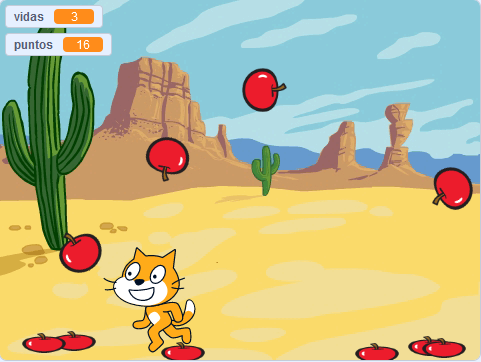
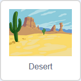
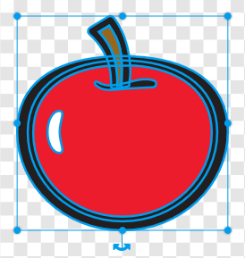
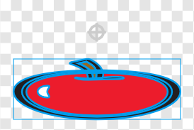
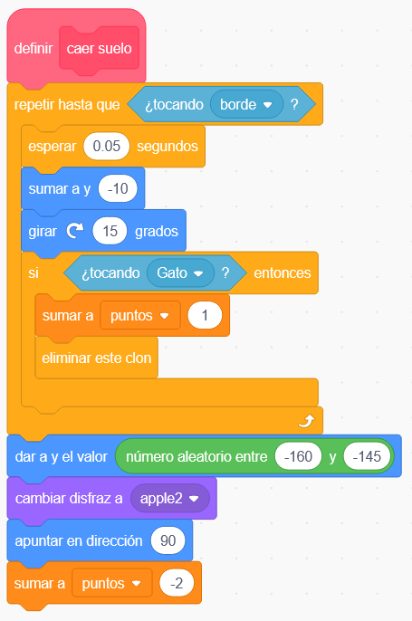
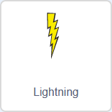

9. Catching apples¶
En esta práctica vamos a programar un juego que consiste en atrapar manzanas con un gato y evitar los rayos que matan. El gato se moverá con las teclas derecha e izquierda. Cuando el gato pierda sus tres vidas, el juego se acabará.
{kind=link}
We start the Scratch editor.
Click language button
 upper menu bar and select English.
upper menu bar and select English.Ahora escogemos un fondo adecuado para nuestro juego. Cambiamos el fondo de escenario por un desierto.
Press the button choose a backdrop
 .
.Search in the topic Exteriores.
and select the backdrop Desert.
Cambiamos el nombre del objeto por Gato.

Creamos la variable vidas que guardará el número de vidas que tiene el Gato. Cuando esta variable valga cero, el programa terminará.
Press the variables button
 ,
,click on create a variable
 .
.Change the name of the variable to vidas

Finally press the button Ok
Ahora programamos las instrucciones de iniciación para el objeto Gato. Este programa dará tres vidas al gato, mostrará el valor en pantalla, colocará al gato debajo de la pantalla y el estilo de rotación a derecha e izquierda.

Continuamos dando al gato movimiento a un lado y a otro. El siguiente programa comprueba si se ha pulsado una tecla de flecha izquierda o de flecha derecha y en caso afirmativo, mueve al gato en una u otra dirección.

Press the green flag
 to test the operation of the program.
to test the operation of the program.Ahora creamos la variable puntos que guardará el número de puntos que hemos conseguido al atrapar las manzanas.
Press the variables button
,click on create a variable
.Change the name of the variable to puntos

Finally press the button Ok
A continuación añadimos un nuevo personaje, una manzana.
Press the button choose an object
 .
.Search in the topic Comida.
and select the object Apple.

Vamos a crear otro disfraz para la manzana, una manzana aplastada. Primero vamos a la pestaña de disfraces

A continuación duplicamos el disfraz de la manzana.

Ahora seleccionamos el disfraz duplicado y lo aplastamos.
 Ya podemos realizar el programa de la manzana dentro de la pestaña de código
 de la manzana.
de la manzana.Primero vamos a esconder la manzana, asignamos cero a los puntos y vamos creando clones de la manzana para que aparezcan en pantalla, mientras el gato tenga vidas.

Antes de realizar el siguiente programa, se debe definir el bloque "caer suelo". Dentro del apartado Mis bloques
 pulsamos "Crear un bloque"
pulsamos "Crear un bloque"  y en el nombre del bloque escribimos "caer suelo".
y en el nombre del bloque escribimos "caer suelo".El siguiente programa hará aparecer cada clon de la manzana en la parte superior en una posición aleatoria, para que luego caiga hacia el suelo.

Por último programamos el bloque que hace caer la manzana hasta el suelo. En caso de tocar al gato, aumentará un punto y el clon de la manzana desaparece. Si el clon de la manzana toca el suelo, se aplastará.
Press the green flag
to test the operation of the program.Añadimos un nuevo objeto, un rayo.
Press the button choose an object
.Search in the topic Todos.
and select the object Lightning.
Ahora realizamos el programa para que el se generen clones del rayo cada pocos segundos.

Cada vez que se genera un clon su comportamiento será el siguiente.
Bajará desde la parte alta de la pantalla. Si toca al gato, las vidas se reducen en una. Si toca el borde inferior, el rayo desaparece.

Por último programamos al gato para que se muera al llegar las vidas a cero. Primero seleccionamos el objeto gato.

A continuación añadimos el programa.

Press the green flag
to test the operation of the program.
{kind=link}
Ejercicios¶
Añade un nuevo personaje que quite vidas igual que el rayo. Este nuevo personaje debe aparecer después de 10 segundos de juego.
Modifica el programa para que el número de rayos aumente con el tiempo, de manera que el juego se haga cada vez más difícil.